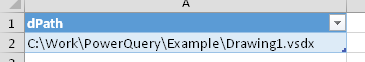
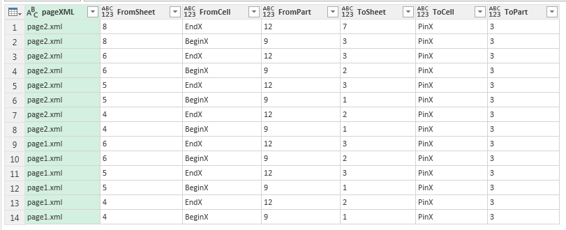
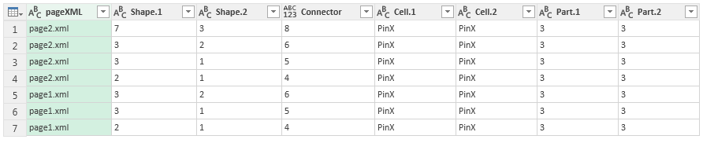
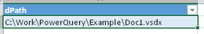
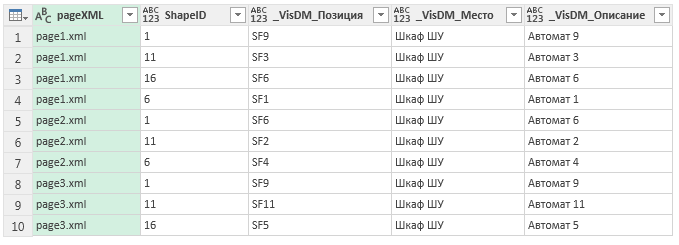
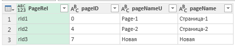
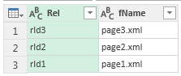
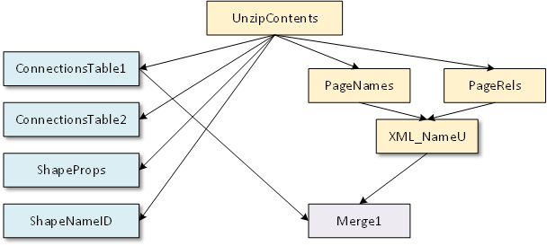

Общие сведения
(По мотивам сообщения пользователя Machestro в http://visio.getbb.ru/viewtopic.php?f=29&t=1429).
Обычно Excel по отношению к Visio рассматривается в качестве источника данных. Тем не менее, обратный канал тоже существует. Он используется либо для формирования отчетов по документам Visio, либо при двусторонней синхронизации данных с источником. Для формирования отчетов как правило используется либо штатный формирователь отчетов, либо специализированные программные решения, создаваемые под конкретную задачу. Причем возможности формирователя отчетов достаточно ограничены.
Однако с появлением в Power Query функции доступа к архивированным файлам (см. http://sql10.blogspot.com/2016/06/reading-zip-files-in-powerquery-m.html) Visio получает еще один и очень неплохой способ формирования отчетов. Ведь если документ Visio представляет собой пакет из нескольких заархивированных XML файлов, а Power Query способен выбирать данные из XML, в том числе и из нескольких файлов, то нет препятствий к тому, чтобы пользователь Excel получил доступ к данным из файла Visio. Причем для этого даже не требуется установленный Visio. Только файл документа и Power Query.
Пожалуй, единственным препятствием будет довольно сложная структура документа Visio. Без знания этой структуры построение запросов невозможно. Значит нужно либо наработать какой-то методический материал, облегчающий освоение специалистами Power Query структуры документа Visio, либо свести эту структуру к нескольким простейшим таблицам, работать с которыми будет гораздо легче.
Идеология Power Query предполагает, что практически любой, даже не сильно подготовленный пользователь должен быть способен манипулировать данными. Значит ей ближе именно второй путь. И скорее всего не обязательно полностью полностью конвертировать структуру документа. Достаточно создать несколько "типовых" запросов, которые станут основой для дальнейших преобразований и закроют большинство потребностей. А кому не хватит, тот пусть глубже изучает структуру Visio и самостоятельно добирается до первоисточника.
Типовые запросы
Ниже представлены несколько запросов, которые можно отнести к типовым. Начальный список невелик и в дальнейшем вполне может быть расширен. Пока в него входят:
- Первичная таблица соединений;
- Таблица соединений источник-коннектор-приемник;
- Отчет Данные шейпов;
- Отчет Имена страниц;
- Отчет Ссылочные идентификаторы страниц.
Первичная таблица соединений
Запрос выбирает таблицу соединений из коллекций Connects страниц в виде, близком к исходному.
Источник (документ Visio) должен быть прописан в таблице VisioPath, как показано на рисунке.

Результат содержит ID шейпов, имена ячеек и признаки соединяемых частей и дополнены идентификаторами страниц документа. Пример результата:

Текст запроса ConnectionsTable1:
let
VisioXML = UnzipContents(File.Contents(Excel.CurrentWorkbook(){[Name="VisioPath"]}[Content]{0}[dPath])),
Pages = Table.SelectRows(VisioXML, each
Text.StartsWith([FileName], "visio/pages/page")
and not Text.EndsWith([FileName], "s.xml")),
ContentColumn = Table.AddColumn(Pages, "Custom", each Xml.Tables(Text.FromBinary([Content]))),
ExpandedSections = Table.ExpandTableColumn(ContentColumn, "Custom", {"Name", "Table"}, {"Name", "Table"}),
// Filter Connect section and expand cells
FilterConnects = Table.SelectRows(ExpandedSections, each ([Name] = "Connects")),
PageContents = Table.ExpandTableColumn(FilterConnects, "Table", {"Table"}, {"Table.1"}),
ExpandCells = Table.ExpandTableColumn(PageContents, "Table.1", {"Attribute:FromSheet", "Attribute:FromCell", "Attribute:FromPart", "Attribute:ToSheet", "Attribute:ToCell", "Attribute:ToPart"}, {"FromSheet", "FromCell", "FromPart", "ToSheet", "ToCell", "ToPart"}),
RemoveColumns = Table.RemoveColumns(ExpandCells,{"Content", "Name"}),
// Expand pageID from file name
ExpandPageID = Table.AddColumn(RemoveColumns, "pageXML", each Text.AfterDelimiter([FileName], "visio/pages/"), type text),
Remove1 = Table.RemoveColumns(ExpandPageID,{"FileName"}),
ConnectionsTable1 = Table.ReorderColumns(Remove1,{"pageXML", "FromSheet", "FromCell", "FromPart", "ToSheet", "ToCell", "ToPart"})
in
ConnectionsTable1
Таблица соединений источник-коннектор-приемник
Запрос аналогичен предыдущему, но результат переформатирован. Строка содержит шейп-источник, шейп-приемник и шейп-коннектор. Дополнительная информация (ячейки, части и идентификатор страницы) - как в предыдущем запросе.
Пример результата:

Текст запроса ConnectionsTable2:
let
VisioXML = UnzipContents(File.Contents(Excel.CurrentWorkbook(){[Name="VisioPath"]}[Content]{0}[dPath])),
Pages = Table.SelectRows(VisioXML, each
Text.StartsWith([FileName], "visio/pages/page")
and not Text.EndsWith([FileName], "s.xml")),
ContentColumn = Table.AddColumn(Pages, "Custom", each Xml.Tables(Text.FromBinary([Content]))),
ExpandedSections = Table.ExpandTableColumn(ContentColumn, "Custom", {"Name", "Table"}, {"Name", "Table"}),
// Filter Connect section and expand cells
FilterConnects = Table.SelectRows(ExpandedSections, each ([Name] = "Connects")),
PageContents = Table.ExpandTableColumn(FilterConnects, "Table", {"Table"}, {"Table.1"}),
ExpandCells = Table.ExpandTableColumn(PageContents, "Table.1", {"Attribute:FromSheet", "Attribute:FromCell", "Attribute:FromPart", "Attribute:ToSheet", "Attribute:ToCell", "Attribute:ToPart"}, {"FromSheet", "FromCell", "FromPart", "ToSheet", "ToCell", "ToPart"}),
RemoveColumns = Table.RemoveColumns(ExpandCells,{"Content", "Name"}),
// Expand pageID from file name
ExpandPageID = Table.AddColumn(RemoveColumns, "pageXML", each Text.AfterDelimiter([FileName], "visio/pages/"), type text),
Remove1 = Table.RemoveColumns(ExpandPageID,{"FileName"}),
Reorder1 = Table.ReorderColumns(Remove1,{"pageXML", "FromSheet", "FromCell", "FromPart", "ToSheet", "ToCell", "ToPart"}),
// Convert to Connections Table type 2
Grouped = Table.Group(Reorder1, {"pageXML","FromSheet"}, {{"Group", each _, type table}}),
AddToSheet = Table.AddColumn(Grouped, "ToSheet1", each Text.Combine([Group][ToSheet], ",")),
AddToCell = Table.AddColumn(AddToSheet, "ToCell1", each Text.Combine([Group][ToCell], ",")),
AddToPart = Table.AddColumn(AddToCell, "ToPart1", each Text.Combine([Group][ToPart], ",")),
SplitSheet = Table.SplitColumn(AddToPart,"ToSheet1",Splitter.SplitTextByDelimiter(","),{"ToSheet.1", "ToSheet.2"}),
SplitCell = Table.SplitColumn(SplitSheet,"ToCell1",Splitter.SplitTextByDelimiter(","),{"ToCell.1", "ToCell.2"}),
SplitPart = Table.SplitColumn(SplitCell,"ToPart1",Splitter.SplitTextByDelimiter(","),{"ToPart.1", "ToPart.2"}),
Remove = Table.RemoveColumns(SplitPart,{"Group"}),
Reorder = Table.ReorderColumns(Remove,{"pageXML", "ToSheet.1", "ToSheet.2", "FromSheet", "ToCell.1", "ToCell.2", "ToPart.1", "ToPart.2"}),
ConnectionsTable2 = Table.RenameColumns(Reorder,{{"ToSheet.1", "Shape.1"}, {"ToSheet.2", "Shape.2"}, {"FromSheet", "Connector"}, {"ToCell.1", "Cell.1"}, {"ToCell.2", "Cell.2"}, {"ToPart.1", "Part.1"}, {"ToPart.2", "Part.2"}})
in
ConnectionsTable2
Отчет Данные шейпов
Запрос выбирает Shape Data из шейпов всех страниц и разворачивает их горизонтально.
Источник (документ Visio) должен быть прописан в таблице VisioPath, как показано на рисунке.

Пример результата:

Набор колонок в результате зависит от разнообразия имен строк в Shape Data в шейпах. В качестве имен колонок выводятся все уникальные значение.
Ключом в таблице служит уникальная пара pageXML, ShapeID.
Текст запроса:
let
VisioXML = UnzipContents(File.Contents(Excel.CurrentWorkbook(){[Name="VisioPath"]}[Content]{0}[dPath])),
Pages = Table.SelectRows(VisioXML, each
Text.StartsWith([FileName], "visio/pages/page")
and not Text.EndsWith([FileName], "s.xml")),
AddID = Table.AddColumn(Pages, "Text Between Delimiters", each Text.AfterDelimiter([FileName], "visio/pages/"), type text),
RenameID = Table.RenameColumns(AddID,{{"Text Between Delimiters", "pageXML"}}),
Contents = Table.AddColumn(RenameID, "XML_As_Text", each Xml.Tables(Text.FromBinary([Content]))),
ShapesTable = Table.ExpandTableColumn(Contents, "XML_As_Text", {"Table"}, {"Shapes"}),
ShapesRecords = Table.ExpandTableColumn(ShapesTable, "Shapes", {"Table"}, {"Shapes.Table"}),
ShapeTable = Table.ExpandTableColumn(ShapesRecords, "Shapes.Table", {"Section", "Attribute:ID"}, {"Section", "ShapeID"}),
ShapeFiltered = Table.SelectRows(ShapeTable, each ([#"ShapeID"] <> null)),
ExpandedSections = Table.ExpandTableColumn(ShapeFiltered, "Section", {"Row", "Attribute:N"}, {"Section.Row", "SectionName"}),
OneSectionOnly = Table.SelectRows(ExpandedSections, each ([#"SectionName"] = "Property")),
ExpandedRows = Table.ExpandTableColumn(OneSectionOnly, "Section.Row", {"Cell", "Attribute:N"}, {"Section.Row.Cell", "PropRowName"}),
RemovedColumns = Table.RemoveColumns(ExpandedRows,{"FileName", "SectionName"}),
Row.Cells = Table.ExpandTableColumn(RemovedColumns, "Section.Row.Cell", {"Attribute:N", "Attribute:V"}, {"PropCellName", "PropVal"}),
ValueOnly = Table.SelectRows(Row.Cells, each ([#"PropCellName"] = "Value")),
RemovedCellName = Table.RemoveColumns(ValueOnly,{"PropCellName","Content"}),
PivotedProperty = Table.Pivot(RemovedCellName, List.Distinct(RemovedCellName[#"PropRowName"]), "PropRowName", "PropVal")
in
PivotedProperty
Отчет Имена страниц
Запрос выбирает идентификаторы и имена страниц.
Источник задается аналогично предыдущим запросам.
Результат представляется в виде таблицы:

Текст запроса PageNames:
let
VisioXML = UnzipContents(File.Contents(Excel.CurrentWorkbook(){[Name="VisioPath"]}[Content]{0}[dPath])),
// Drill down ID, Names of Pages
PagesFilter = Table.SelectRows(VisioXML, each ([FileName] = "visio/pages/pages.xml")),
TableOfPages = Xml.Tables(PagesFilter{0}[Content]){0}[Table],
RelAdded = Table.AddColumn(TableOfPages, "Custom", each Table.FirstValue([Rel])),
ExpRel = Table.ExpandTableColumn(RelAdded, "Custom", {"Attribute:id"}, {"PageRel"}),
PageColumns = Table.SelectColumns(ExpRel,{"PageRel","Attribute:ID", "Attribute:NameU", "Attribute:Name"}),
PageNames = Table.RenameColumns(PageColumns,{{"Attribute:ID", "pageID"}, {"Attribute:NameU", "pageNameU"}, {"Attribute:Name", "pageName"}})
in
PageNames
Отчет Ссылочные идентификаторы страниц
Запрос выбирает таблицу соответствия между ссылочными идентификаторами и менами файлов страниц.
Источник задается аналогично предыдущим запросам.
Результат представляется в виде таблицы:

Текст запроса PageRels:
let
VisioXML = UnzipContents(File.Contents(Excel.CurrentWorkbook(){[Name="VisioPath"]}[Content]{0}[dPath])),
PagesFilter = Table.SelectRows(VisioXML, each ([FileName] = "visio/pages/_rels/pages.xml.rels")),
TableOfPages = Xml.Tables(PagesFilter{0}[Content]){0}[Table],
RemovedColumns = Table.RemoveColumns(TableOfPages,{"Attribute:Type"}),
PageRels = Table.RenameColumns(RemovedColumns,{{"Attribute:Id", "Rel"}, {"Attribute:Target", "fName"}})
in
PageRels
Результат запроса может быть использован для перехода от имени файла страницы к имени страницы. Дело в том, что данные получаемые на основе файлов страниц, привязываются к именам файлов страниц (типа page1.xml), которые не равны именам страниц. Для перехода к имени требуется сначала перейти к ссылочному идентификатору (page1.xml - rid1), а от него к имени (rid1 - Страница-1).
Комбинированные запросы
Для получения таблицы переходов от имени XML файла к имени страницы нужно связать запросы PageRels и PageNames.
Это выполняет запрос XML_NameU с таким кодом:
let
Source = Table.NestedJoin(PageRels,{"Rel"},PageNames,{"PageRel"},"PageNames",JoinKind.Inner),
#"Expanded PageNames" = Table.ExpandTableColumn(Source, "PageNames", {"pageNameU", "pageName"}, {"pageNameU", "pageName"})
in
#"Expanded PageNames"
После этого можно связывать любой из основных запросов, имеющий колонку pageXML, с полученным запросом XML_NameU. В результате вместо имени файла получим имя страницы.
Применение типовых запросов
Перечисленные запросы размещены в шаблоне Tmplt.xlsx и готовы к использованию. Для применения нужно ввести полный путь к файлу Visio на первом листе шаблона. После этого можно либо загружать результат нужного запроса на лист Excel, либо создавать свои запросы для преобразования полученных результатов к нужному виду.
На рисунке ниже показаны зависимости между запросами.

Функция UnzipContents предоставляет доступ к файлам пакета и используется во всех остальных запросах.
Запросы PageNames, PageRels и XML_NameU самостоятельного значения не имеют и предназначены для объединения с типовыми запросами для раскрытия ссылок на файлы страниц документа Visio.
Merge1 - приведен исключительно в качестве примера объединения типового запроса с служебным, раскрывающим имена страниц.
Остальные четыре запроса - это собственно типовые запросы, отражающие в табличном виде свойства шейпов и таблицы соединений между шейпами.